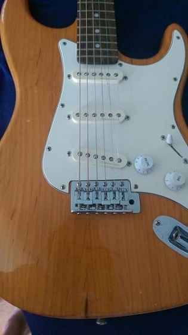
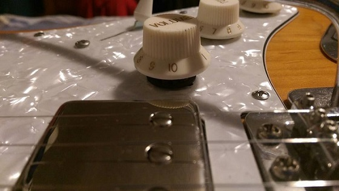
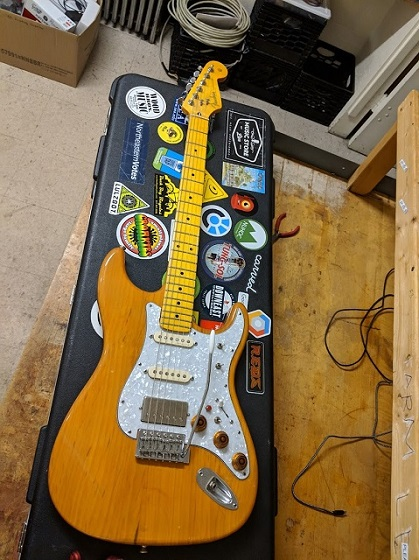

Andrew Whitaker


This post combines many guitar projects I have done, ranging from my first major build on December 30, 2015 to the present day.
One of my first experiences with soldering and workbench troubleshooting skills came from an electric guitar I received in middle school. A great deal discovered on Craigslist by my father and uncle, it was an intermediate model with a number of upgrades available on guitars five times its price. However, something was never quite right about how it sounded, and my playing wasn’t the sole offender. Here’s the only before image I have:

Fast-forward to one day during my senior year of high school, when I plugged the guitar in only to get nothing out. Initial disassembly and inspection found that the output jack had come disconnected, and I patched up the wiring with pipe solder and a $10 soldering iron from Radio Shack. This was my first attempt at soldering and it was not pretty, but it got the job done and made me curious about what else was inside an electric guitar.
Just like a traditional acoustic guitar, an electric guitar makes sound using the vibrations of its strings. However, rather than having a chamber for these sound waves to resonate and project, the sound waves are translated into electrical signals through magnetic pickups. A simple passive pickup consists of a collection of magnetic poles set in a plastic bobbin with coils of inductor wire on the outside – in other words, it is a transducer which creates an electric signal as a result of changes in its core’s magnetic field. Guitar pickups are typically measured in ohms of DC coil resistance rather than inductance, with typical “clean” pickups (most single coils) measuring in the 5K range and “hot” pickup variants measuring from 9K up to 20K.
Single coil pickups have a phase direction which corresponds to their winding directions (dust off that right hand rule from Physics 2!) They are also susceptible to 60Hz hum from the line voltage. A humbucker pickup eliminates this noise by having two coils of opposite winding to cancel noise, and the extra winding typically doubles the DC resistance, achieving that 9K-20K figure from above. Two coils in the same direction will instead create phase cancellation, which is sometimes undesirable and sometimes fun!
If you’d like to read more (or see some great diagrams like the one below), Seymour Duncan has a great writeup on pickups and how they work.

During the fall of my Freshman year, I was lucky to have a very musical and tinker-happy roommate. After some back and forth, I realized that the reason my guitar’s aftermarket pickups didn’t sound all that great was because they were in the wrong place! (They are generally color coded, but turns out this model officially does not follow the standard!) Not only did this cause phase issues, but the spacing of the magnets was also not aligned with the strings. While I was in there to move the pickups around, I decided to try my hand at some additional upgrades, including:

A few months later I made further modifications, including:

As the old question asks, how much can you replace before it’s just considered new?
My Fender Squier Jaguar Bass:
My friend’s Wayne’s World 2 MIM Stratocaster:
Over the years, I have amassed so many spare parts and takeoffs from upgrades, most of which end up sitting in a crate with no clear intention. Recently, I decided that I would try to repurpose as many of these as possible to create a new guitar. Here’s a quick rundown of what I have:
I will post more progress pictures as the build continues, currently the last picture is a mockup accomplished by stacking parts on top of each other.